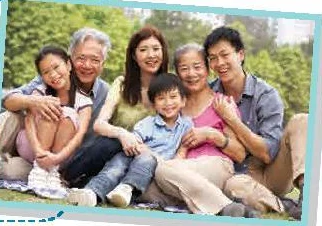

Talking about
different generations
Lesson 4 — Speaking
2Describe · Compare · Discuss
- 🗣️
Describe
the different generations in your family
- ⚖️
Compare
two generations — while…, compared with…
- 🌉
Discuss
common generation gaps and how to bridge them
Warm-up
Who said it?
5 minutesWho might say each sentence?
1. “In my day, we didn’t have smartphones. We played outside!” grandparent
2. “Be home before 9 p.m.!” parent
3. “Can you show me how to send a voice message?” grandparent
4. “It’s my life. I want to choose my own major.” teenager
5. “Just five more minutes! I’m in the middle of a game.” teenager
Kevin and Ly
Task 1 + speaking tips
7 minutesComplete the conversation
A. Yes. My grandparents are over 60 now. They hold very traditional views about everything.
B. I see. What about your parents?
C. Yes, I do. I live with my grandparents, my parents, and my younger sister.
D. That’s interesting. Have you noticed any differences between the generations?
1 C · 2 D · 3 A · 4 B
Kevin and Ly · 1–2
Kevin and Ly · 3–4
Kevin and Ly · 5–6
Three ways to begin
Present the topic
“Let’s talk about …”
Ask for information
“What kind of family do you have?”
Ask for an opinion
“What do you think about your generation?”
Rule: answer → add one detail → ask one question.
Your family
Task 2 · describe and compare
22 minutesWhat are they like?

- open to new ways of thinking
- have fixed ideas
- make their own decisions
- hold traditional views
- not want big changes
- good at electronic devices
Describing people
- open-minded (adj) cởi mở
- strict (adj) nghiêm khắc
Describing people
- tech-savvy (adj) giỏi công nghệ
- overprotective (adj) bao bọc quá mức
Differences and similarities
Compared with my grandparents, my parents are more open-minded.
While my grandparents prefer folk music, my parents prefer pop.
Unlike my grandparents, my parents use smartphones every day.
Both my parents and my grandparents value family traditions.
Show you’re listening
React
Really? · That’s interesting! · Same here! · Oh, I see. · That’s a good point.
Follow up
Why do you think so? · Can you give me an example? · How do you feel about that?
From words to conversation
From words to conversation
Not quite → Better
My parents are different with me. different from me
My grandparents are traditional views. hold traditional views
I disagree my mum about screen time. disagree with my mum
Compare with my grandparents, … Compared with …
My grandmother is 70 years. 70 years old / in her 70s
Talk about the generations in your family
- 1️⃣
Ask about your partner’s family.
- 2️⃣
Describe the grandparents and parents.
- 3️⃣
Compare the two generations.
- 4️⃣
Swap roles and do it again.
Generation gaps
Task 3 · discuss and report
8 minutesWhat are the most common gaps in your families?
- career choices
- study habits
- screen time
- social media
- clothes & hairstyle
- music taste
- household chores
- curfew
- privacy
- spending habits
My parents think that …, while I think … · I understand their point, but …
Think 1 min · Discuss 4 min · Report 3 min
Reporter’s frame
In our group, the most common gap is …
Most of us said that …
This happens because …
We think families can bridge the gap by + V-ing …
Choose one card
- 🅰️
Describe one generation in your family. Use 2 adjectives.
- 🅱️
Compare two generations. Use while or compared with.
- ©️
Describe one gap and how your family deals with it.
Homework
1. Record a 1-minute talk about a generation gap in your family.
2. Do the Speaking exercises in the workbook.
3. Get ready for Lesson 5 — Listening.